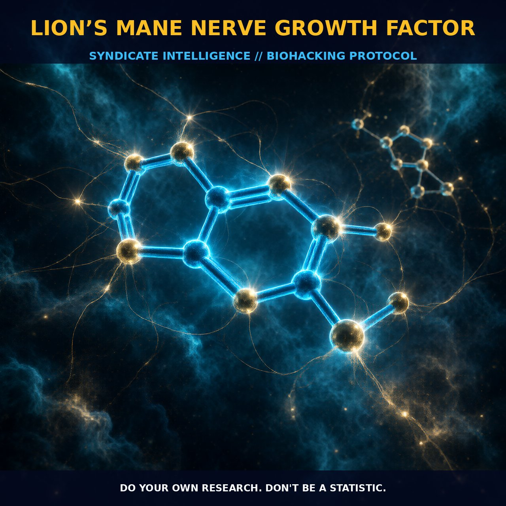

Enhancing Neurological Health with Lions Mane Mushrooms

1. The Mechanism
Lion's Mane mushroom, scientifically known as Hericium erinaceus, is a remarkable fungal compound with a rich history in traditional Chinese medicine. Valued for both its culinary appeal and profound effects on neurological health, the mushroom is particularly celebrated for its ability to stimulate the synthesis of nerve growth factor (NGF), a protein essential for the growth, maintenance, and survival of neurons. NGF plays a critical role in neuronal plasticity and repair, contributing to the modulation of cognitive functions and overall brain health.
The mushroom contains bioactive compounds such as hericenones and erinacines, which are diterpenoids that effectively activate the NGF pathway. Hericenones are primarily found in the fruiting bodies of the mushroom, while erinacines are more abundant in the mycelia. These compounds facilitate the production of NGF by acting on various signaling pathways within the neuronal cells, promoting neurogenesis and enhancing synaptic plasticity. Furthermore, NGF upregulation by Lion's Mane mushrooms has been shown to support neuronal resilience and repair, providing a foundation for improved cognitive performance and neuronal health.
The mechanisms by which Hericium erinaceus enhances neurotrophic effects are multifaceted. Erinacines, a group of diterpenoid compounds, are particularly potent in stimulating NGF synthesis. These compounds can cross the blood-brain barrier and directly interact with neuronal cells, promoting the expression of NGF mRNA and increasing the production of NGF proteins. Additionally, these compounds activate CREB (cAMP response element-binding protein), a key transcription factor that plays a crucial role in neurogenesis and neuronal survival. The activation of CREB leads to the upregulation of BDNF (brain-derived neurotrophic factor) synthesis, a related neurotrophic factor that supports neuronal function and plasticity. This synergistic effect between NGF and BDNF is essential for the maintenance and growth of neuronal networks, contributing to enhanced cognitive function and neurological resilience.
Moreover, Lion's Mane mushrooms also exhibit antioxidant and anti-inflammatory properties, which further support neuronal health by reducing oxidative stress and inflammation in the brain.
2. Biological Leverage
The neurotrophic and neuroprotective effects of Lion's Mane mushroom extend beyond the synthesis of NGF and BDNF. By promoting neurogenesis and enhancing synaptic plasticity, Lion's Mane mushrooms play a pivotal role in maintaining neuronal health and cognitive function. The stimulation of NGF and BDNF synthesis through the activation of CREB signaling pathways not only supports the survival and growth of neurons but also enhances their resilience against oxidative stress and inflammation. This dual action of neurotrophic factor stimulation and anti-inflammatory effects creates a robust environment for neuronal health.
In addition to its direct impact on neuronal growth and survival, Lion's Mane mushrooms also offer a protective shield against neurodegenerative conditions. By modulating inflammatory processes and reducing oxidative stress, these mushrooms help preserve neuronal integrity and functionality. The anti-inflammatory properties of Lion's Mane mushrooms are attributed to their ability to inhibit pro-inflammatory cytokines, such as TNF-α and IL-6, which are known to contribute to neuroinflammation and neuronal damage. This reduction in inflammation can help mitigate the progression of neurodegener gent diseases, such as Alzheimer's and Parkinson's, by preserving neuronal networks and synaptic connections. Furthermore, the antioxidant properties of Lion's Mane mushrooms, through the presence of various bioactive compounds, help combat oxidative stress, which is a significant factor in neuronal damage and cognitive decline.
The nutritional profile of Lion's Mane mushrooms, rich in dietary fiber, essential minerals, and high protein content, further enhances its therapeutic potential. These nutrients contribute to the overall well-being of the brain by supporting metabolic functions and providing essential substrates for neuronal activity. The mycelial biomass of Lion's Mane mushrooms, particularly in its high protein content, can serve as a valuable protein source, especially in applications where meat alternatives are sought. This nutritional aspect, combined with its bioactive compounds, creates a synergistic effect that supports comprehensive neurological health and cognitive function.
3. Tactical Implementation
When implementing Lion's Mane mushroom supplementation, the dosage and timing are crucial factors to consider. Dosages typically range from 500 mg to 3 grams per day, depending on the extract concentration. Extracts with higher concentrations of hericenones and erinacines will require lower doses for the same effect. For beginners, it is advisable to start with a low-to-moderate dose of around 500 mg to 1 gram per day and gradually increase the dosage to assess individual tolerance and efficacy. It is important to note that human dosing is not well-established, and individual responses may vary based on factors such as the extract quality and personal metabolic rate.
Timing is also a key consideration. Lion's Mane mushrooms are best taken in the morning or early afternoon to allow for optimal absorption and utilization throughout the day. Consistency is key, as the neurotrophic effects of Lion's Mane mushrooms are cumulative, and regular supplementation is necessary to maintain sustained benefits. Additionally, stacking Lion's Mane mushrooms with other nootropic compounds can enhance their effects. For example, combining Lion's Mane with L-Carnosine, a dipeptide found in high concentrations in muscles and the brain, can provide complementary neuroprotective benefits. L-Carnosine has been shown to support cognitive function and reduce oxidative stress, making it a valuable addition to Lion's Mane supplementation.
It is also beneficial to integrate Lion's Mane supplementation with a balanced diet and regular exercise. The high protein content and dietary fiber provided by Lion's Mane mushrooms can contribute to overall nutritional well-being, while regular exercise, particularly functional exercises like those inspired by the cheetah, can enhance neurogenesis and cognitive function. The speed, suppleness, and strength associated with cheetah-like exercises can complement the neurotrophic benefits of Lion's Mane mushrooms, creating a synergistic effect on cognitive performance and neuronal health.
Prostar Life Hack
Start with a low-to-moderate dose of Lion's Mane mushroom (500 mg to 1 gram per day) and gradually increase to assess individual tolerance and efficacy. Combine it with L-Carnosine for enhanced neuroprotective benefits and engage in functional exercises inspired by the cheetah to maximize cognitive performance.
[ AUTHOR: LEAD TECHNICAL RESEARCHER ]